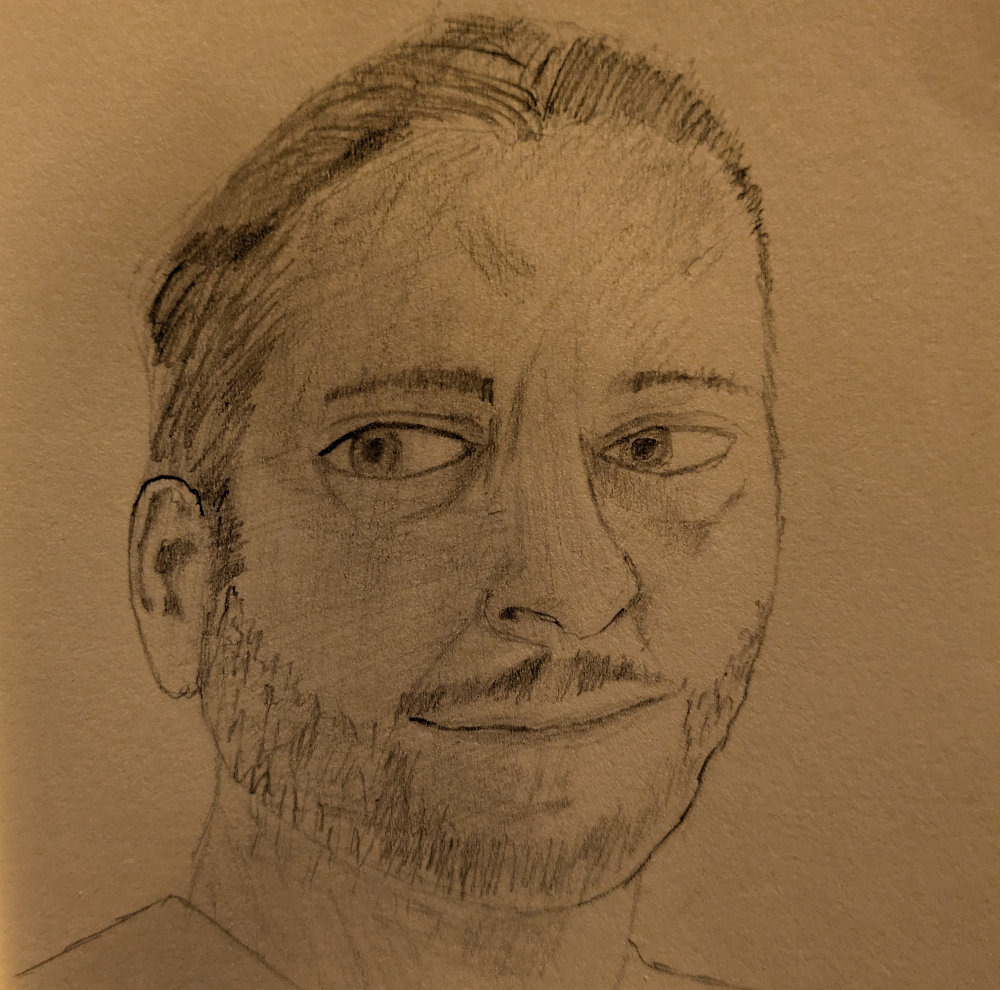

Am I Autistic?
This is the second entry in a series of blog posts where I answer personal questions that nobody actually asked. This time around, I’m failing before I start by answering a question that I have actually been asked of me many, many times.
Are you autistic?
Yep.
Specifically, I’m the proud bearer of a diagnosis of Autistic Spectrum Disorder (without cognitive impairment or speech delay). Seriously, it’s written like that on the paperwork. This is apparently simpler than calling it Aspergers Syndrome.
Side note: There are other good reasons to drop the Aspergers label, though I can’t help but feel they could have come up with a more svelte replacement than the current mouthful.
This would be a rather short post if I left it there, so I’m going to babble a bit about my history with this whole ASD mess and express my feelings about it. Without further ado:
The Road To Diagnosis
I was in my late twenties when I got formally diagnosed. I’d spent five or six years on the waiting list for the assessment. Bear in mind, though, that I’d been suspecting I was autistic for basically my whole life. Indeed, the teachers at my second primary school tried to convince my mother to have me assessed. She refused and moved me to another school, which was about as helpful as it sounds. The point, I guess, is that it’s not like this was subtle or hidden at all.
The majority of close friends I’ve had over the course of my life have been fellow autistics, mostly diagnosed but one or two self-identifiers as well. The crowd I ran with as a teenager was entirely composed of kids who had something going on. Loads of us were LGBT+, many of us had family drama, serious mental illness was commonplace, we all wore unconventional clothes and listened to great music and took drugs, you know the sort of crowd I’m talking about. In such a group, it’s easy to feel normal, I think. I went through my teenage years knowing I was different from the average but not really caring why, since my friends didn’t either. Adulthood was a bit trickier, however. Once you’re working full-time and your ability to stay underneath a roof is at least in part dependant on your social skills, the cracks can really start to show.
I had numerous encounters that cost me dearly, losing jobs over fights I didn’t know I was in or slights I hadn’t known I was committing, that sort of thing. It took me a few years to be willing to face down whatever it was in me that made life so unnecessarily difficult, but eventually I got the nerve to speak to my GP and get referred. I’m not entirely sure why I’d been so reticent; perhaps worried over what else might be uncovered.
Entirely Bananas
Autism is not a mental health condition. It’s a pervasive developmental disability. But it affects your mental health in a big way. I don’t wish to speak for other people here, so I’ll stick to what I know: Me.
I’ve a long and storied history with depression and anxiety, both of these conditions having been triggered by (and in turn contributed to) social isolation. I’ve tended to be quite good at finding little groups of misfits to share time with throughout my life, but I’ve always been paranoid and cautious of most people. I can’t read them, you see. I don’t know if people are lying, don’t know if they’re finding me boring, can’t tell if they’re trying to manipulate me. I’ve been hurt enough by unkind actors to find myself utterly unable to assume the best (and it’s worth noting that I have myself been an unkind actor on some occasions when I was younger; we’re all arseholes at some point), and there’s a cost to occupying this headspace. I find myself deliberately avoiding socialising, for the most part. I was fairly gregarious in the right setting as a teenager, but as an adult I’ve grown a rough hide, all spiked like a hedgehog. The sort of social closeness I crave feels far too dangerous for me to ever really express my want for it, and pursuing it is unthinkable. I’ve had facsimiles of that closeness, as a teenager when I was so thoroughly masked that people only ever got to know the real me by accident, and when I worked in hospitality and I was performing sociableness by rote for the benefit of my colleagues and customers. But there was always a wall between the authentic version of myself that I wanted to share and the homunculus I presented to the world. I can be more or less open and free with my wife, but not anyone else. I simply don’t have the capability. And even with her, I unconsciously suppress my ticks and stims as much as I can, find myself masking unwillingly. I’ve so thoroughly trained my mask over my thirty-four years on this earth that I’m not able to put the damn thing down anymore.

The mask I wear, drawn badly
I think that this discordance between my heart and my face is what sent me mad, as much as anything else.
Ah, that might warrant a little more explanation.
So, as I’ve mentioned in passing once or twice and will likely write about in length in a future post, I almost died in 2023. Like, really close. Close enough to death to smell the Grim Reaper’s foetid taint. About nine months after this, after returning to work, I had a teensie weensie little bit of psychosis. Paranoid delusions, hallucinations, that sort of thing. Now, paranoid thoughts and visual glitches aren’t new to me, but believing they were real was novel, and fucking terrifying. It didn’t last long, and I’ve largely returned to my previous state of half-madness. I do take an atypical antipsychotic, but mostly I’m back to normal. My normal, anyway.
I believe that my mental whoopsie there was as much related to my autism and my (ultimately self-destructive) attempts to compensate for it by forcing myself into social situations and just winging it as it was the nearly dying thing. Of course, as stated above, I’ve basically always had visual glitches and paranoid thoughts. There’s likely some weird other stuff going on, but again that’s pretty common with autistic people. Those of us with ASD are somewhere between three and ten times as likely as the general population to experience psychosis at some point during our lifetimes. It’s something I don’t hear discussion of all that often, but it’s worth thinking about.
If you’re curious, the only mental health diagnosis I currently hold is PTSD. I get flashbacks and insomnia and irritableness as well as negative self-image and thinking everyone hates me from the ‘complex’ subtype. It’s as fun as it sounds, but it doesn’t really explain some of the abnormalities in my experience of the world. I’m wrestling with the mental heath services at the moment to try and figure out what’s going on there, I’ll keep you posted.
The How
It would probably be useful to lay down a little info about how autism affects me in a clinical sense. I’ll write out the common symptoms as a list, concentrating on the ones that affect me most:
- Seeming blunt or rude
- Social anxiety
- Not understanding what others are thinking or feeling
- Social isolation
- Need for routine
- Not understanding social norms
- Avoiding eye contact
- Detail-oriented
- Subject to sensory overload, particularly with high-pitched noises
- Obsessive interests
- Stimming
There’s a few typical autistic things I don’t experience all that much. For instance, planning. Loads of autistic people like to plan out what they do in some detail. I don’t. I’m pretty spur-of-the-moment, in fact. Another example is sarcasm or other forms of nonliteral speech/communication. I have no issue with that stuff whatsoever and use it heavily myself.
Might also be worth mentioning that some of my autism signs/symptoms are pretty subtle to outside observers. I use pain as a stim, for instance, and often get it by just biting my tongue or the inside of my cheeks. This isn’t necessarily obvious to people around me.
Wrapping up
Alright, that’s about all I have to say on the subject of my weird brain. For today, at least. I’ll likely write more about autism and mental health later down the line. There was something cathartic about laying down a few thousand words on this topic, even though I’ve deleted most of them.
Toodles,
–Antony F.